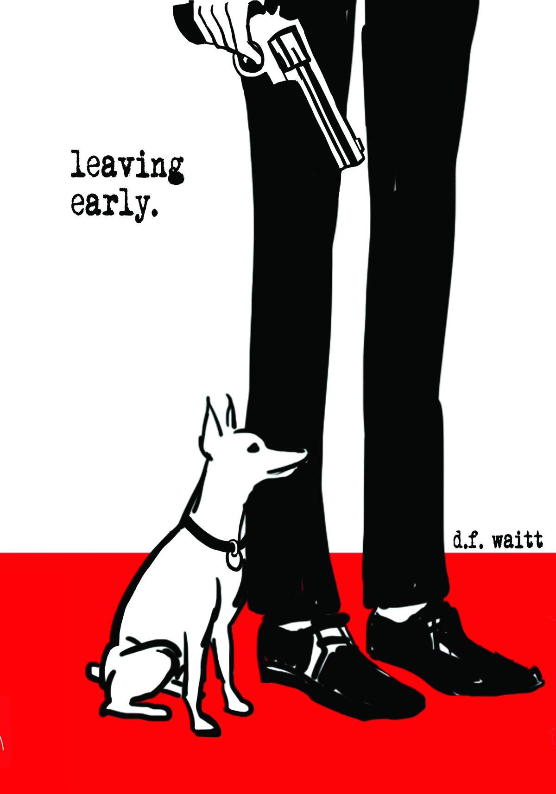
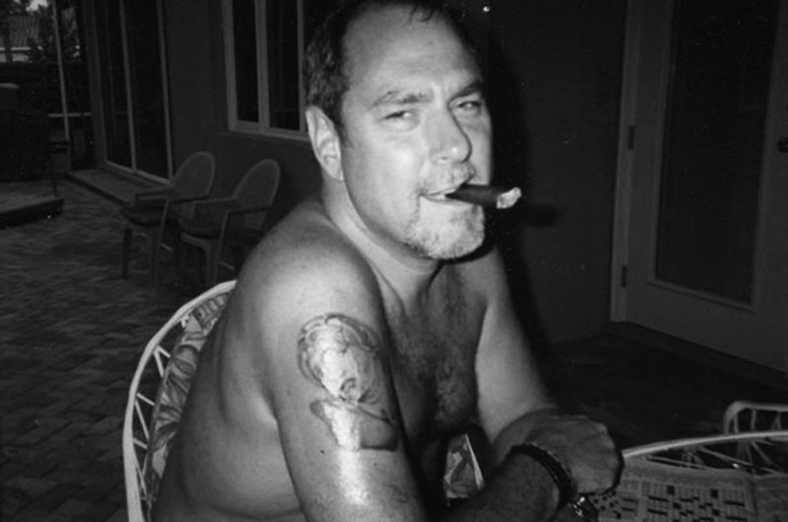

|
—Synopsis A funny book about my suicide. Suicide is the bastard stepchild hiding in the basement. It is the 13th leading cause of death worldwide, and the 6th leading cause of death in America. Twice as many people die from suicide as from homicide every year. And nobody talks about it. leaving early. is a chronicle of the author's ten-day countdown to commit suicide, but along the way it’s also a book about common sense and about red neckties and about Dan the Beautiful Snowflake and about strippers and bikers and about killing Grampy and about how to cook the perfect turkey and about Russian spies and about flying dinosaurs and about lady cops with big guns, and about the author's tiny confidant, Boo. |
 |
|  |
—Who’s d.f. waitt d.f. waitt is an adrenalin junkie who has made his living as a writer covering the edgier and more tawdry side of life. As a crime reporter for newspapers in California and Louisiana he won awards from the Associated Press and the Gannett News Service writing about bank robbers, murderers and biker gangs. As the publisher of a number of entertainment industry trade magazines, he has rubbed shoulders with rock stars and porn stars. He is married with two children and lives in Clearwater, Florida. |
—Talking points:
|
How topical is the subject of suicide? 1) Suicides are this country’s hidden stepchild. Suicide is the eighth leading cause of death in America. Annual suicides actually outnumber homicides two-to-one. For every successful suicide, there are 20 to 25 unsuccessful attempts. Ignoring the problem won't make it go away. 2) One of the most controversial topics in the world today is abortion and the debate over pro-choice and right to life. Ironically, suicide is also 100 percent about the concept of pro-choice yet, to date, it has not received the national exposure that the abortion debate has. It's time. 3) Suicide is not a frequent topic in mainstream movies, but when it is, for some reason it is always in successful, hit movies that end up nominated for an Academy Award, including American Beauty, Leaving Las Vegas, Ordinary People, Girl Interrupted, Harold and Maude, and, of course, The Virgin Suicides. Two famous movies, Coming Home and Thelma & Louise, both end with dramatic suicides. |
4) One of the most famous works of literature revolves around suicide—William Shakespeare's Romeo and Juliet. And in his Julius Caesar play both Brutus and Cassius commit suicide, while there are five suicides in Anthony and Cleopatra.
5) Revered authors like Ernest Hemingway and Sylvia Plath included themes of suicide in their writings Kate Chopins’s 1899 novel, The Awakening, the earliest and most powerful work of early feminism, ends with the title character’s suicide. Suicide is featured in other great novels like The Heart Is A lonely Hunter, The Bell Jar, Anna Karenina, and Madame Bovary.
|
—Reviews "LEAVING EARLY is a quietly hypnotic, darkly funny and thought provoking read about the complications of life, and death." As the narrator of LEAVING EARLY counts down the days to his suicide, he contemplates his life so far while offering some poignant and facetious observations of life in this richly dark and humorous narrative. |
The first chapter, entitled ‘gun’ sets the tone for the story. The date offers the beginning of the countdown as the narrator explains why he is taking his own life. Though the answer for this is relayed after a time, it becomes one of the paradoxes of life that he mentions.
The narrator is quite likeable in his lack of pompousness and his sweet connection and communication with three-year-old Boudreaux, AKA Boo, (his equally likeable, smart and witty, Miniature Pinscher), who often weighs in on the conversation. The narrative shoots off into all sorts of directions, and offers some startling and curious philosophical thoughts about life and death, and all the complications it entails.
The narrator’s considerations of his life offer a diverse range of experiences as a fledging police beat reporter life, complete with moments of great activity to antics filled with bikers and strip clubs. The narrator conveys diverse and powerful raw emotion with his images, from the disturbing experiences, such as when he saw the file from a child rape victim to angry memories of his father’s death and his own callous response to his mother as she came to him for comfort and he turned her away crossly, saying: “Don’t ever do this again . . . go home. Deal with it.”
An equal dose of humor and irony are sprinkled into the narrator’s considerations about suicide-related trivia, such as: “In the United States a suicide occurs every fifteen minutes. That’s four people for every episode of American Idol.” Also included is a plethora of information about suicides by celebrities and non-celebrities, suicide techniques and all the various nitty-gritty details to consider when committing suicide. For example, the narrator rules out wrist slitting while lying in the bathtub, stating: “I’d prefer not to be naked when I’m found.” This irony is also seen in his ponderings about government and advocate groups’ machinations in American society and culture.
Though the tangents and dialogue are drawn out at times, the curiosity factor and d.f. waitt’s bare bones writing style, that brings out a dark, stark honesty and irony about the fullness and sterility of life, keeps the reader turning the page.
LEAVING EARLY is a quietly hypnotic, darkly funny and thought provoking read about the complications of life, and death.
* * *
"Not just a funny book about his suicide"
by Dylan Correll (New York, NY)
As the first line on the back cover suggests, this book promises us a personal journey toward the author taking his own life, albeit with a humorous slant on an otherwise bleak subject. You won't be disappointed there, but that's only the pretense to a much deeper and earnest piece of writing that makes this a must-read.
Cleverly intertwined—perhaps even unintentionally hidden–in a surprisingly entertaining while alternatingly comical and touching story (I couldn't put it down), is a rather frank reflection of life at the midpoint, and the dilemma of whether or not to stick around for the second act.
In part, this is a book about the mid-life crisis and the impossibility of growing up: that unreasonable intersection of your personal desires and fears with the reality of having a family and the role you life has obligated you to play. In taking such a blunt and honest look at himself, d.f. waitt challenges that longstanding idea Brett Easton Ellis once described as "the myth that men will outgrow the adolescent pursuit of pleasure, the dream of a life without rules or responsibilities."
That's not to say this is a book for only affluent white American men of middle-age, though that is certainly the characterization Waitt provides. It is a parable of sorts, and in the writing of himself is some deeper reflection of the irrational nature of being human. As outrageous as his own story might appear at times, it’s hard to imagine any reader not finding themselves somewhere in the pages.
This author has clearly led a full life, and a large portion of the book is spent in recollection of past stories both too incredible to be fiction and unmistakably authentic in their personal detail. The full picture of who d.f. waitt is comes into focus slowly, but once there it’s both larger than life while heartwarmingly close to home. Against the backdrop of his own colorful past, a fascinating picture emerges of a man coming to terms with the fact that he won't maintain the pose he believed life required of him any longer, and the realities of that conclusion.
This is a book that is as fun as it is sincere, and above all else, remarkably charming. It's about being a child, teenager, and a parent all together. About losing a father at an early age, about being tired of life while finding it too sinisterly amusing to take seriously. And yes, about Dan the Beautiful Snowflake, a .357 Magnum, strippers, and a talking dog, who, much like his owner, is both too wise and far too much of a cocky smart-ass for the absurdity of his own existence.
* * *
"Great Read"
From Amazon.com
If you're like me and enjoy alternating between reading business/educational books and fictional 'for pleasure' books, then this book is right up your alley. leaving early. was sandwiched between Boomerang (M. Lewis) and The Signal and the Noise (N. Silver). It was a perfect break from reading about sobering topics. leaving early. is a thoroughly enjoyable books and reads so naturally that you can unknowingly read for several hours at a time.
* * *
"Dark and twisted, but a great read!"
From Amazon.com
The book starts off exciting right away, with the narrator announcing that in ten days he will kill himself. Framed within a clever and relevant take on suicide (not spawned from depression but from something more like the mid-life boredom), the book takes us through the life of the narrator and how he was brought to this point. In adventures from Florida to Texas to Russia, there are tons of endearing and repugnant characters I still think about to this day ...
* * *
"Couldn't put it down!"
From Amazon.com
What strikes me the most is the way Waitt creates a brash atmosphere from the very beginning of the book announcing the impending suicide in his future. A lot of the story is done in flashback during this ten day period with references to the present searching for reason and purpose while weaving the story thru the side alleys of depression, humor, fear, truth, hope and hopelessness. It is a good ride! The novel is a wake-up call in a sense, it is an inspiring read because it sends out the message that we should all remain hopeful and true to ourselves.
* * *
"The wild ride of his life!"
From The US Review of Books
leaving early. is about the last ten days in a man's life, but his decision to make it the last ten days. He's not poor, not sick, and not suffering from depression. He's decided that now is the time, and for the next nine days he is going to prepare for his birthday… on the tenth day… and on that day he'll die. But that's just part of the story. It's also about the wild ride of his life, the dozens of wacky characters he's met along the way, and how he got to this place, to the day he bought the gun to kill himself with. And there's one more character, actually the one who could be considered the lead character in this tragic, thought-provoking, laugh out loud, brilliantly written and totally bizarre book. His name is Boo. Boo is Waitt's dog, best friend, confidant, and advisor. This book takes a good long look at suicide, the 13th leading cause of death in America.
{kind=link}